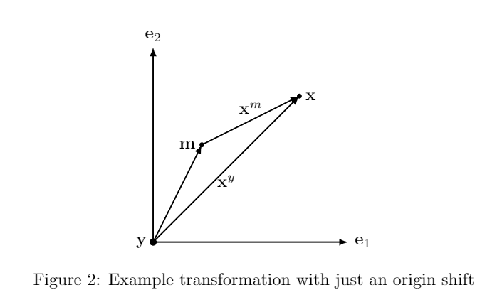
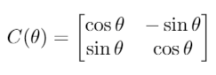
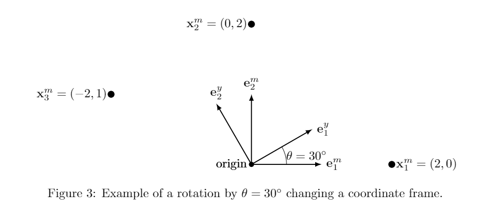
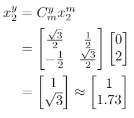
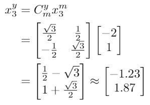
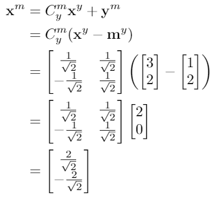
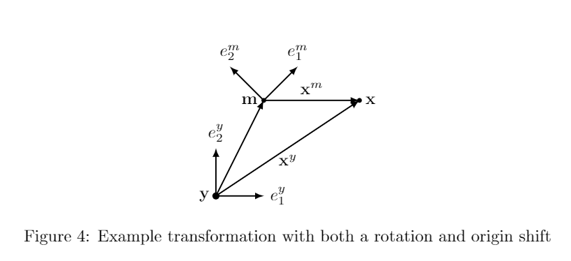

3 Changing Coordinate Frames
A reference frame for Cartesian coordinate systems is defined by two things: an origin and a set of orthonormal vectors that define directions away from the origin. Let's start with a change of origin location. We will be attempting to
transform from my (m) coordinate frame to yours (y).
3.1 Handling a change in coordinate origin
If you and I are both facing the same direction, all you need to know is where I am in your coordinate frame. We denote this quantity m where the coordinate frame's letter is bolded to show it is a vector. The
transformation is now a simple vector addition operation
xy=xm + m
This addition is illustrated in Figure 2. While this equation is conceptually very simple, please realize it is for pedagogical purposes only! In fact, please forget it because the caveat to use it, that the axes are the same for the
coordinate frames m and y, makes it almost useless. (That is why that equation is not numbered! Please don't refer to it!)

3.2 Handling different coordinate frame axes
When transforming from one coordinate frame to another, we need to understand how the basis vectors are different between the coordinate frames. The mapping of the basis vectors from one reference frame into another is generally referred
to as a rotation. In two dimensions (2-d), this is represented by a single rotation angle as shown in Figure 3. To convert a vector from one coordinate frame's set of vectors into another, we use a Given's rotation matrix,
defined as:

This matrix enables the conversion of a vector between two coordinate frames with the same origin. Consider Figure 3 that has three points ({x1,x2,x3}), all

expressed in the m coordinate system. Because θ = 30◦, then rotation matrix going from m to y (denoted Cmy) will be:

For each point in Figure 3, the location of that point in your coordinate system can be derived by multiplying the rotation matrix and the vector together, yielding:



Let us consider what some of these numbers mean as observing what happens numerically can give some insight into what a proper rotation does.
- For x1 and x2, note what happens to the non-zero components. x1y has a negative value while x2y has a positive value. Thinking through
whether a positive or negative value should replace a zero helps determine which way the axes are rotating and what the corresponding Given's rotation should look like.
- Note that for x1 and x2, the non-zero term does not change nearly as much as the zero term, while for x3 this does not appear to be as much of a pattern. This is reflective of the
fact that differentially, rotations cause movement orthogonal to a vector.
- Note that the output vectors of each rotation are the magnitude as the input vector. Rotations never change the length of a vector, just express them using different axes!
3.2.1 Rotation Matrix Properties
Note that the Given's rotation matrix has some special properties that we should discuss. Mathematically, the matrix is a special orthonormal matrix, meaning it has the following properties:
- The transpose of the matrix is also its inverse: CT = C
-1
.
- Each row and column of the matrix is unit length
- Each row (column) of the matrix is orthogonal to every other row (column) in the matrix.
- The determinate of the matrix is +1
The first property is particularly important as the rotation matrix from one coordinate frame into another frame also gives us the inverse transform. Mathematically:
where CT
|
represents the transpose of the matrix. This property means that if you have the matrix to go from one coordinate frame to the other, it is relatively straight-forward to go backwards as well.
3.3 Combined rotation and translation
Now, let's combine these two operations together. Note that you can never add vectors together unless the numbers inside those vectors correspond with the same vector directions. This is the cause of many mistakes.
Always, always align axes first! Linguistically, to convert a vector x from my coordinate system xm to yours (xy):
- Rotate the vector so the axes are aligned
- Add the origin of my coordinate frame (in your axes!) to the rotated vector
Put mathematically:
The inverse of this operation can also be expressed as:
Note that my = -Cymym, so we also have:
Let's walk through an example. In Figure 4, the point xy is at (3,2), the m coordinate frame axes are rotated 45° from the y coordinate frame axes, and my is (1,2). Given this information, we can
solve for xm.


Now, let's see if we can go backwards and recover the original vector as well.

This demonstrates the capability to move from any coordinate frame to another coordinate frame and back again without loss of information.
← Previous
Next →
|